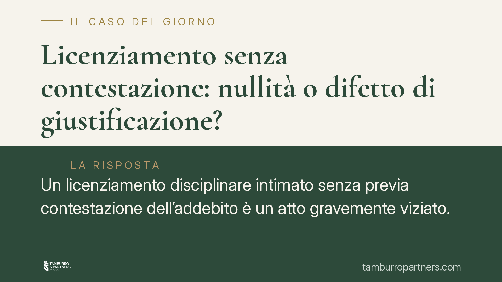

Licenziamento senza contestazione: nullità o difetto di giustificazione?
Un licenziamento disciplinare intimato senza previa contestazione dell'addebito è un atto gravemente viziato. Ma qual è la natura del vizio? Un orientamento giurisprudenziale lo qualifica non come nullità radicale, bensì come difetto di giustificazione. La distinzione non è astratta: incide direttamente sul regime di tutela applicabile e, quindi, su reintegrazione e indennizzo economico.

Il fatto
Il licenziamento disciplinare presuppone un procedimento. Prima del provvedimento, il datore deve contestare per iscritto l'addebito al lavoratore, concedendogli un termine per le giustificazioni. È la regola fissata dall'art. 7 della l. 300/1970 (Statuto dei lavoratori), che garantisce il contraddittorio prima della sanzione.
Quando questo passaggio manca del tutto, il licenziamento è viziato. Resta però aperta una questione decisiva: si tratta di un atto nullo o di un atto ingiustificato? Un orientamento giurisprudenziale di merito ha affrontato il punto, qualificando il licenziamento privo di contestazione non come nullità radicale, ma come licenziamento privo di giustificazione per violazione delle garanzie procedurali.
Inquadramento normativo
La differenza tra i due vizi non è terminologica. La nullità colpisce il licenziamento nei casi tipici e tassativi previsti dalla legge: licenziamento discriminatorio, ritorsivo, intimato in forma orale, o per motivo illecito determinante. In questi casi la tutela è la più forte: reintegrazione nel posto di lavoro, a prescindere dalle dimensioni dell'impresa.
L'omessa contestazione, invece, è un vizio procedurale che si traduce in difetto di giustificazione. Il licenziamento c'è, è formalmente intimato, ma non regge perché non ha rispettato le garanzie dell'art. 7. La conseguenza è che il regime di tutela dipende da due variabili: le dimensioni del datore e, soprattutto, la data di assunzione del lavoratore.
Per i lavoratori assunti prima del 7 marzo 2015 opera lo Statuto: nelle imprese sopra i 15 dipendenti l'art. 18 l. 300/1970 gradua la tutela secondo la gravità del vizio; nelle piccole imprese si applica l'art. 8 l. 604/1966, che prevede, a scelta del datore, la riassunzione oppure un'indennità.
Per i lavoratori assunti dal 7 marzo 2015 vige invece il regime delle tutele crescenti (D.Lgs. 23/2015). Nelle piccole imprese si applica l'art. 9 D.Lgs. 23/2015, che dimezza l'indennità rispetto al regime ordinario e non prevede la riassunzione come alternativa alla reintegra. È un criterio che va tenuto distinto: la data di assunzione determina il binario normativo.
Perché la distinzione conta
La qualificazione del vizio pesa sul risultato concreto. Se il licenziamento fosse nullo, scatterebbe la reintegrazione piena anche nelle micro-imprese. Se invece è solo ingiustificato per vizio procedurale, nelle piccole imprese il lavoratore ottiene di norma il solo indennizzo economico, senza rientrare in azienda.
In sintesi: stesso errore del datore (omessa contestazione), ma esiti molto diversi a seconda di come il giudice inquadra il vizio e del regime applicabile al rapporto. Per questo la lettura che esclude la nullità radicale ha un impatto rilevante proprio sui rapporti nelle imprese sotto i 15 dipendenti.
Resta un punto di cautela. L'omessa contestazione può talvolta mascherare un licenziamento ritorsivo o discriminatorio. In quel caso il vizio cambia natura: non è più un difetto procedurale, ma un motivo illecito che riporta il licenziamento nell'area della nullità e della reintegrazione. La qualificazione dipende quindi dall'esame dei fatti concreti, non da etichette formali.
Cosa fare in concreto
Per il lavoratore:
- Impugna il licenziamento per iscritto entro 60 giorni dalla sua ricezione: è il termine per l'impugnazione stragiudiziale previsto dall'art. 6 l. 604/1966.
- Attiva l'azione giudiziale (deposito del ricorso o richiesta di conciliazione) nei successivi 180 giorni: è un secondo termine, distinto dal primo, la cui decorrenza è decisiva per non perdere la tutela.
- Conserva ogni documento utile: lettera di licenziamento, eventuali comunicazioni aziendali, elementi che possano far emergere un intento ritorsivo o discriminatorio.
Per il datore di lavoro:
- Non intimare mai un licenziamento disciplinare senza previa contestazione scritta e senza rispettare i termini a difesa dell'art. 7 l. 300/1970.
- Verifica a monte la data di assunzione del lavoratore e il numero dei dipendenti: sono i due parametri che determinano il regime applicabile e l'entità del rischio economico.
La qualificazione del vizio e l'individuazione della tutela applicabile richiedono un esame tecnico dei fatti concreti e del regime temporale del rapporto.
Disclaimer
Contributo informativo a cura di Tamburro & Partners - Avv. Giuseppe Tamburro. Non costituisce parere legale.
Ogni storia di lavoro ha i suoi tempi.
Se gestisci HR e vuoi un confronto su contenzioso, ispezioni o licenziamenti, scrivi allo studio. Ti rispondiamo entro un giorno lavorativo.